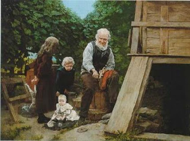

Kiddushin 68 - Marriage with Gentiles
From where do we know that Kiddushin does not take effect with a gentile? - " You shall not make marriages with them ."
From where do we know that her offspring is non-Jewish like her? - " For he will turn your son away from Me and they will serve other gods. " Thus your grandson who comes from your Jewish daughter is called your son but your grandson who comes from a heathen woman is not called your son, rather, he is considered her son.
Art: Grandfather's Pleasure by Louis Henry Charles Moeller